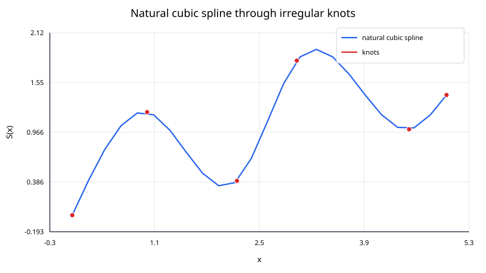
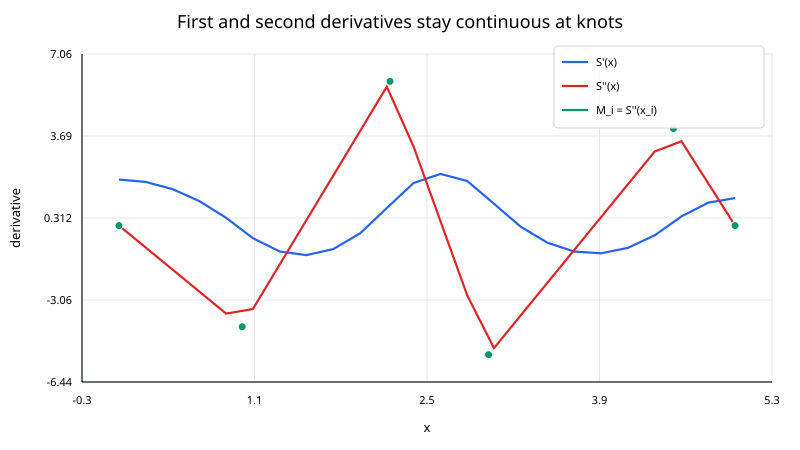

A cubic spline interpolates data with a sequence of cubic polynomials rather than one high-degree polynomial across the entire interval.
For ordered nodes
$$ x_0<x_1<\cdots<x_n, $$
one cubic is used on each interval
$$ [x_i,x_{i+1}]. $$
The pieces are joined so that the function, first derivative, and second derivative are continuous at every interior knot. The result is a smooth curve with local low-degree behavior.

A straight-line interpolant is simple and local, but it has slope discontinuities at the nodes. A single high-degree polynomial is smooth, but it can oscillate strongly and becomes increasingly sensitive as the number of nodes grows.
Cubic splines occupy a useful middle ground:
On interval $[x_i,x_{i+1}]$, write
$$ S_i(x) = a_i + b_i(x - x_i) + c_i(x - x_i)^2 + d_i(x - x_i)^3. $$
For $n$ intervals there are $4n$ segment coefficients.
They are determined by four types of conditions.
Each segment matches its endpoint values:
$$ S_i(x_i) = y_i, \qquad S_i(x_{i+1}) = y_{i+1}. $$
At an interior knot,
$$ S_{i-1}'(x_i) = S_i'(x_i). $$
Also require
$$ S_{i-1}''(x_i) = S_i''(x_i). $$
The interior conditions alone do not uniquely determine the spline. Two endpoint conditions are required.
This note focuses on the natural spline:
$$ S''(x_0) = 0, \qquad S''(x_n) = 0. $$
Other common choices are clamped, periodic, and not-a-knot boundary conditions.
A natural boundary condition sets the endpoint curvature to zero; it does not set the endpoint slope to zero.
A convenient derivation introduces
$$ M_i = S''(x_i). $$
Let
$$ h_i = x_{i+1} - x_i. $$
For a natural spline,
$$ M_0 = 0, \qquad M_n = 0. $$
The interior second derivatives satisfy the tridiagonal equations
$$ h_{i-1}M_{i-1} + 2(h_{i-1} + h_i)M_i + h_iM_{i+1} = 6 \left[\frac{y_{i+1}-y_i}{h_i} - \frac{y_i-y_{i-1}}{h_{i-1}} \right] $$
for
$$ i = 1,\ldots,n - 1. $$
The right-hand side measures the change in neighboring secant slopes. If the data are locally close to a straight line, that difference is small; if the slope changes strongly, the spline needs more curvature.
Once the $M_i$ values are known,
$$ a_i = y_i, $$
$$ b_i = \frac{y_{i+1}-y_i}{h_i} - \frac{h_i}{6}(2M_i + M_{i+1}), $$
$$ c_i = \frac{M_i}{2}, $$
and
$$ d_i = \frac{M_{i+1}-M_i}{6h_i}. $$
Thus
$$ S_i(x) = a_i + b_i\Delta x + c_i\Delta x^2 + d_i\Delta x^3, \qquad \Delta x = x - x_i. $$
The second derivative on a segment is
$$ S_i''(x) = 2c_i + 6d_i(x - x_i). $$
At the left endpoint,
$$ S_i''(x_i) = 2c_i = M_i. $$
At the right endpoint,
$$ S_i''(x_{i+1}) = 2c_i + 6d_ih_i = M_{i+1}. $$
Adjacent segments therefore share the same second derivative at each knot. The tridiagonal system was derived from the matching of the first derivatives, so those are continuous as well.

Use
$$ (0,0), \qquad(1,0.5), \qquad(2,0). $$
Both intervals have width
$$ h_0 = h_1 = 1. $$
For a natural spline,
$$ M_0 = M_2 = 0. $$
The only interior equation is
$$ 1\cdot M_0 + 2(1 + 1)M_1 + 1\cdot M_2 = 6 \left[\frac{0-0.5}{1} - \frac{0.5-0}{1} \right]. $$
Therefore,
$$ 4M_1 = -6, $$
so
$$ M_1 = -1.5. $$
For the first interval,
$$ a_0 = 0, \qquad b_0 = 0.75, \qquad c_0 = 0, \qquad d_0 = -0.25. $$
Hence
$$ S_0(x) = 0.75x - 0.25x^3. $$
At $x=0.5$,
$$ S_0(0.5) = 0.75(0.5) - 0.25(0.5)^3 = 0.34375. $$
Thus
$$ \boxed{S(0.5)=0.34375}. $$
For a natural cubic spline:
I. sort the points by increasing $x_i$;
II. compute interval widths
$$ h_i = x_{i+1} - x_i; $$
III. assemble the tridiagonal system for $M_1,\ldots,M_{n-1}$;
IV. solve that system;
V. set $M_0=M_n=0$;
VI. compute $(a_i,b_i,c_i,d_i)$ for each interval;
VII. for each query, locate its interval and evaluate the corresponding cubic.
The Thomas algorithm solves a nonsingular tridiagonal system in $O(n)$ time and $O(n)$ storage.
After preprocessing, a query requires:
The cubic can be evaluated in nested form:
$$ S_i(x) = a_i + \Delta x \left[b_i + \Delta x(c_i + \Delta x d_i) \right]. $$
Different endpoint conditions produce different interpolants even when all interior data are identical.
Common options include:
$$ S''(x_0) = S''(x_n) = 0; $$
When comparing with a library, make sure the boundary condition matches. A library default may not be natural.
Cubic splines usually avoid the dramatic oscillations of high-degree global polynomials, but they are not automatically shape preserving.
A cubic spline can:
If monotonicity is required, use a shape-preserving interpolation method designed for that constraint.